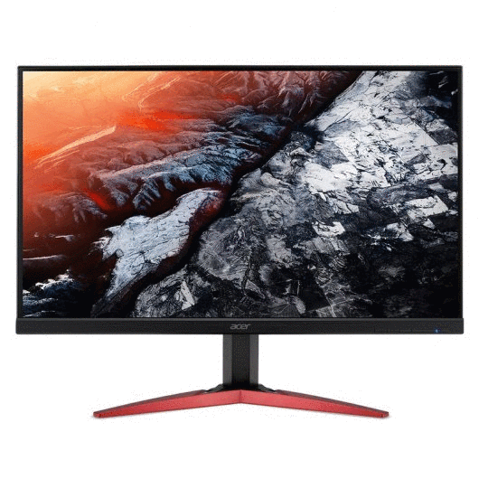
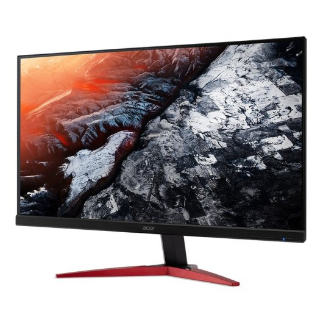
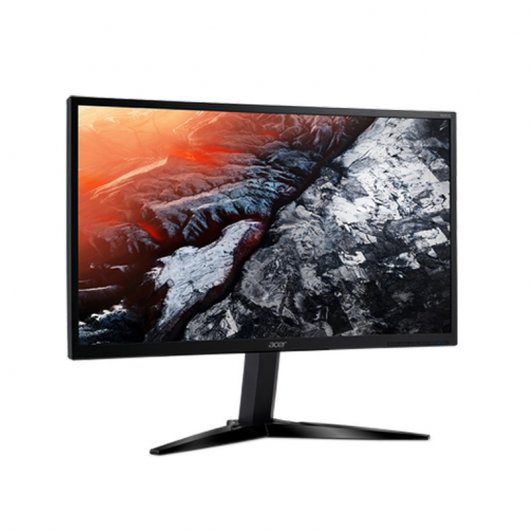
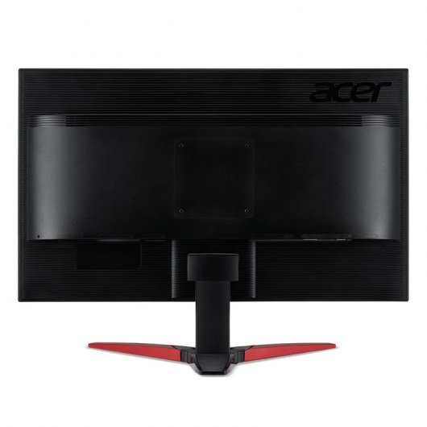

FUTURETECH STORE |
|     |
Acer KG1 24.5" 144Hz
229€
Presuma la sutileza de su FreeSync™ con la rápida frecuencia de actualización y la arquitectura ZeroFrame™ del monitor de la serie KG1.
Especificaciones
Exhibición
Diagonal de la pantalla: 62,2 cm (24.5")
Brillo de pantalla: 400 cd / m²
Resolución de la pantalla: 1920 x 1080 Pixeles
Tiempo de respuesta: 1 ms
Pantalla: LED
Tipo HD: Full HD
Tecnología de visualización: TN+Film
Formatos gráficos soportados: 1920 x 1080 (HD 1080)
Ángulo de visión, horizontal: 170°
Ángulo de visión, vertical: 160°
Número de colores de la pantalla: 16,78 millones de colores
Relación de aspecto nativa: 16:9
3D: No
Relación de contraste (dinámico): 100000000:1
Relación de aspecto: 16:9
Diagonal de pantalla: 62,2 cm
Máxima velocidad de actualización: 144 Hz
Forma de la pantalla: Plana
Puertos e Interfaces
Puerto DVI: Si
Número de puertos HDMI: 1
Cantidad de DisplayPorts: 1
Peso y dimensiones
Ancho del dispositivo (con soporte): 558,8 mm
Profundidad dispositivo (con soporte): 215,9 mm
Altura del dispositivo (con soporte): 406,4 mm
Peso con stand: 4,22 kg
Control de energía
Consumo de energía (inactivo): 0,43 W
Consumo energético: 17,1 W
Consumo de energía (apagado): 0,3 W
Aprobaciones reguladoras
Certificado Energy Star: Si
Ergonomía
Ranura para cable de seguridad: No
montaje VESA: Si
Ajuste de la inclinación: Si
Ángulo de inclinación: -5 - 15°
Cliente fino / Thin Client
Cliente delgado instalado: No
Contenido del embalaje
Stand incluido: Si
Cables incluidos: Corriente alterna, DVI, DisplayPort
Diseño
Color del producto: Negro
Color de pies: Negro
Desempeño
AMD FreeSync: Si
Multimedia
Altavoces incorporados: Si
Sintonizador de TV integrado: No
Número de altavoces: 2
Potencia estimada RMS: 8 W
|


{kind=link}
{kind=link}
{kind=link}
{kind=link}